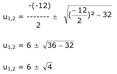

Aufgabe 154 4x - 12 * 2x + 32 = 0 (22)x – 12 * 2x + 32 = 0 22x – 12 * 2x + 32 =0 Lösung durch Substitution: 2x = u --> 22x = u² u2 - 12u + 32 = 0 p = -12 ; q = 32  u1,2 = 6 ± 2 u1 = 6 + 2 = 8 u2 = 6 - 2 = 4 Rücksubstituieren: 2x = 8 = 23 Exponentenvergleich: x1 = 3 2x = 4 = 22 Exponentenvergleich: x2 = 2 L = {2; 3}